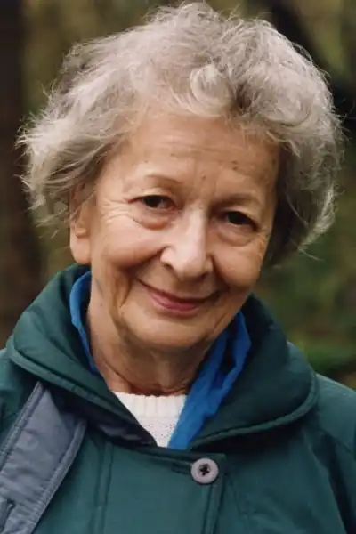
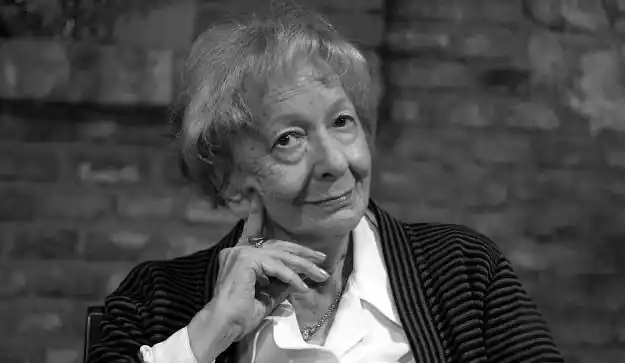
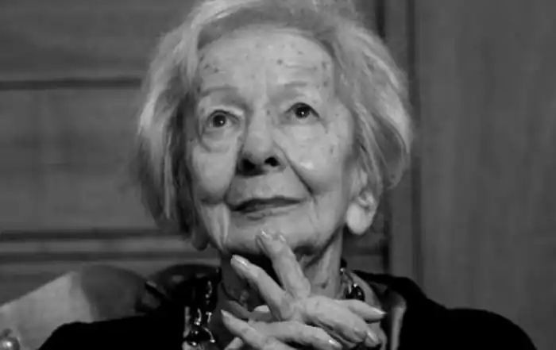
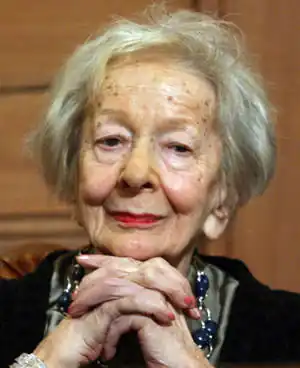

ШИМБОРСЬКА, Віслава (Szymborska, Wislawa — нар. 2.07.1923, Курнік) — польська поетеса, лауреат Нобелівської премії 1996 р.Шимборська народилася у Курніку, що біля Познаня, новіші метрикальні дослідження свідчать, що подія ця нібито відбулася у підпознанському Бнінє. Однак точно відомо, що раннє дитинство вона провела у Куртку, а все подальше життя пов'язала з Краковом, з якого інколи ненадовго виїжджала, але рідко і неохоче, У Кракові вона опинилася, коли їй було вісім років, там здобула усю офіційну освіту: закінчила середню школу, а потім потрапила до відомої елітарної гімназії сестер Уршулянок. Однак атестат отримала вже на підпільних курсах в часи окупації. Після війни студіювала в Яґеллонському університеті — полоністику і соціологію. Але жоден із тих академічних напрямів її не захопив, не привабив, а, отже, і не довів до отримання диплому.
Дебютувала у тижневому літературному додатку до краківського "Дзєнніка Польскєго" 14 березня 1945 р. ("Валька", № 3) віршем "Шукаю слова". Редакторами журналу були — В. Зехентер і А. Влодек (чоловік Шимборської до 1954 p., з яким вона підтримувала приятельські стосунки до кінця його життя). Невдовзі Шимборська опублікувала другий вірш "Колись ми знали світ уривками", і ще пізніше — третій "Про щось більше". Вони були написані раніше, під час війни 1944 р. А наступного року — "Дитячий хрестовий похід", вірш, який і сьогодні вражає.
Жодний із тих текстів не міг з'явитися ні у першій ("Для того живемо" — "Dlatego zyjemy", 1952), ні у другій ("Питання до себе" — "Pytania zadawane sobie", 1954) збірочках її віршів. Уже відбувся Щецінський з'їзд літераторів, на якому остаточно було задекларовано соцреалізм, а для скептицизму, творчої непевності, котрі делікатно пробивалися у перших творах Шимборської, зовсім не було місця. Як і для особистої візи світу. Ті дві перші збірки переважно були фактичним виявом заангажованої соціалістичної поезії, а також симптомами ідеологічного спокушення особи. Було там кілька знаменних винятків, у яких пробивалася характерна особиста інтонація і нотки самоіронії, у кожному разі відсторонення, й від себе самої також, наприклад: "У банальних римах", "Особисте", "Циркові звірі", "До творця", "Запитання до себе", "Розгнівана муза", "Ніч", "Острів сирен", "Закохані", "Клич" та ін. У 1952 р. Шимборську прийняли у Спілку польських літераторів і приблизно тоді ж вона вступила у Польську об'єднану партію робітничу, членом якої була до 1966 р.Із 1953 р. Шимборська була членом редколегії "Жиця Літерацкєго", де вела відділ поезії, а також систематично редагувала рубрику "Літературна пошта", яка завдяки їй і досі (хоч би в архівах) залишилася найдотепнішою й одночасно дуже прихильною до молодих адептів літератури. Також 1968 p., склавши обов'язки редактора відділу поезії, вона публікувала свої знамениті "Позапланові читання" ("Lektury nadobowiajzkowe"). Регулярно друкувала ці фейлетони щотижня аж до 1976 р. Того ж року, після т. зв, "радомських подій", Шимборська вирішила, що подальша її співпраця з тим часописом — неможлива, і відмовилася від неї. Так вона розірвала усі професії пута. Від часу введення військового стану вона належала до найтіснішого кола краківського літературного "підпілля", а в 1988 р, стала одним із засновників Товариства польських письменників, легалізованого у 1989 р., у якому, однак, не виконувала жодних функцій. Справжнім "другим дебютом", з якого починається творення того образу поезії Шимборської, що є сьогодні невід'ємним елементом пейзажу польської літератури (а, властиво, й європейської), була третя її книжка "Волання до Єті" ("Wolanie do Yeti", 1957), яка відразу стала одним із найваждивіших чинників воскресіння польської поезії після жовтня 1956 р. Книжка містить усього 20 віршів. І кількість ця суттєво не відрізняється від середнього обсягу кожної наступної збірки. Світовий феномен Шимборської полягає у тому, що вона зуміла виразити максимум найважливіших сутностей, які пронизують духовне життя сучасного світу, у мінімальній кількості поетичних текстів, до того ж невеликих за розміром. За своє творче життя вона опублікувала у книжках понад 220 віршів. З цього випливає, що пише вона (призначених для публікації) десь 4—5 віршів на рік. Шимборська говорить те, що найважливіше і, безумовно, конечне. Вимогливість і самокритичність змусили її, зрештою, відмовитися від майже 25 текстів з перших двох збірок, а також кільканадцяти віршів із пізніших книжок. Шимборська на даний час видала такі поетичні збірки: "Для того живемо" (1952), "Питання до себе" (1954), "Волання до Єті" (1957), "Сіль" ("Sol", 1962), "Сто потіх" ("Stopociech", 1967), "Всяк випадок" ("Wszelki wypadek", 1972, 1975), "Велике число" ("Wielka liczba", 1976), "Люди на мості" ("Ludzie na moscie", 1986, 1988), "Кінець і початок" ("Копіес і poczatek", 1992), "Мить" ("Chwila", 2002), "Забавлянки для великих дітей" ("Rymowanki dla duzych dzieci", 2003). Крім того, з'явилося принаймні шість книжок вибраного. Безприкладно скупа з кількісного погляду ця поезія уже щонайменше 40 літ систематично і без поспіху будує вражаюче послідовний і вражаюче багатий у своїй різноманітності образ світу, охоплюючи, по суті, всі доступні людському розумові та уяві його обшири — від піщинок, каменів, рослин, примітивних зоологічних створінь через історію людської цивілізації і культури аж до планет, зірок, галактик і навіть гіпотетичного позаземного буття, підходячи з філософським скептицизмом і мудрою іронією до межі science fiction, у чому Шимборську міг би дорівнятися хіба С. Лем: Чітко зараз собі пригадую,як люди, побачивши мене,вмовкали на півслові.Обривався сміх.Розпліталися руки.Діти бігли до мами.Я навіть не знала їхніх нетривких імен. А та пісенька про зелений листочок —ніхто її при мені не закінчив.Я любила їх..Але любила з висоти.З-понад життя.З майбутнього. Де завжди порожньоі звідки немає нічого легшого, як побачити смерть.Шкодую, що мій голос був твердий.Подивіться на себе з зірок — кричала я —подивіться на себе з зірок.Чули і опускали очі.("Монолог для Касандри", тут і далі пер. Я. Сенчишин) Улюблені теми і мотиви Шимборської, викристалізувані набагато раніше, повертаються протягом усієї її творчості у постійно новому освітленні, як у багатоголосій фузі. Однак ця поезія, якщо дивитися на неї з перспективи сьогодення, попри своє тематичне багатство і всю різноманітність, творить образ винятково однорідний, особливо, коли йдеться про заховане у ньому авторське світобачення у найширшому його розумінні. Світобачення, завжди передаване художньою мовою конкретики й оперте на детальному, мікроскопічному огляді деталей і ніколи на філософській спекуляції й абстракції. Та ця конкретика набуває тут несподіваної багатовимірності; сеанси, взяті з безпосереднього досвіду, відкривають неочікувані перспективи, виявляють багато шарів і, попри конкретність точки виходу, попри цілком реальні і навіть прозаїчні відправні точки уяви — завжди залишаються привідкритими. Шимборська говорить нам про нас (а, отже, і про себе) і про світ, який хочемо вважати своїм — дохідливо, точно, просто і конкретно. І якраз цим способом вислову вкидає нас у неспокій. Кожна її констатація ховає у собі запитання, а найчастіше — низку запитань. І змушує до пошуку багатьох відповідей, котрі народжують чергові запитання. Це, без сумніву, поезія головних цінностей: Нічого не змінилося.Тіло — болюче,мусить їсти, дихати повітрям і спати,має тонку шкіру і відразу ж під нею кров,має чималий запас зубів і нігтів,кості його крихкі, суглоби розтягуються. У тортурах це все беруть до уваги.Нічого не змінилося.Тіло тремтить, як тремтілоперед заснуванням Риму і після заснування,у двадцятому сторіччі перед і після Христа,тортури є, як і були, тільки земля змаліла, і коли щось діється, то так, ніби за стіною......Нічого не змінилося.Крім течії рік,лінії лісів, узбереж, пустель і льодовиків.Поміж тими пейзажами душечка блукає,зникає, повертається, наближається, віддаляється,сама для себе чужа, невловима,раз певна, раз непевна свого існування,тоді коли тіло є і є і єі немає куди подітися.("Тортури")У збірці "Волання до Єті", у вірші, якому ціла збірка опосередковано завдячує назвою, а саме у "Нотатках з подорожі в Гімалаї, котра не відбулася", вперше так виразно з'являється проблема (потім вона стане провідною), яку роками вже називають "проблемою Інобуття", тобто істот (явищ? фактів? речей?) з-поза людського світу, які мають, за Шимборською, власні уявлення про дійсність, власне "світобачення", відмінне від наших поглядів і непроникне для нас до кінця. Водночас увиразнюється така характерна для усієї творчості Шимборської філософська іронія та авто-іронія, яка, по суті, досягає порогу романтичної "метафізичної іронії". Ця інтонація продовжується і підсилюється у наступній книжці "Сіль" (1962). Однак тут вона виявляється певною мірою поліфонічно, з темою контакту з іншим "я", людським, а точніше з еротичним мотивом, який у попередній книжці був дещо притишеним і котрий у жодній наступній не займає так багато місця. Але одночасно з'являється найзагальніше схоплена проблема людського часу і головних метафізичних параметрів, що визначають людське буття. І ці обидві проблеми, на диво, природно співіснують, взаємно просвітлюють і доповнюють одна одну. "Сто потіх" у головних своїх мотивах продовжує проблему "Волання до Єті". Це роздуми про дивність роду людського у Всесвіті, а також про сучасну позицію цього роду і про історію цивілізації, починаючи від палеоліту, і про історію природи, починаючи від найпростіших форм життя на Землі. Іронія і самоіронія поетеси вже ніколи потім не сягнуть таких висот. "Всяк випадок" піднімається, можна сказати, у "вищі сфери" філософії. Однак піднімається, постійно маючи на увазі найдрібніші деталі нашого повсякденного досвіду. Захоплює тут Шимборську велич, розмаїття і незліченне багатство світу, його детальність та конкретність, а водночас небайдужість. Якщо попередню книжку умовно можна означити як поетичну "філософську антропологію", то цю — спробою "поетичної метафізики", у сутнісному, філософському сенсі останнього слова, тобто метафізики як сфери питань про суть існування.